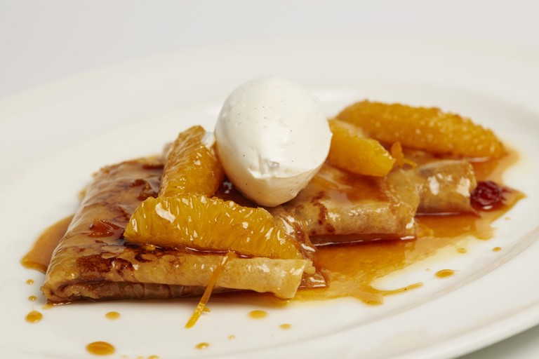

Galvins' crêpes Suzette

Description
The Galvin brothers follow the traditional method for this crêpes Suzette recipe. They recommend serving with a scoop of vanilla ice cream to complete this magnificent orange inspired dessert.
Ingredients
- 55g of unsalted butter
- 2 eggs
- 25g of caster sugar
- 100g of plain flour
- Sea Salt
- 350ml of milk
- 4 tsp vegetable oil
- 2 oranges
- 225g of caster sugar
- 80ml of water
- 175g of unsalted butter
- 5 tbsp of Grand Marnier, or other orange liqueur
- 1 orange, segmented with all peel and pith removed
Directions
- For the crêpe batter, heat a small frying pan and once hot, add the butter and melt over a high heat until it foams
- Pour the melted butter into a mixing bowl, add the eggs, sugar, flour and a pinch of sea salt and whisk together to combine
- Slowly add the milk, whisking constantly to make a smooth batter - it should have the consistency of pouring cream
- Pass the batter through a medium sieve, then leave to stand for at least 1 hour. Whisk again just before using
- To cook the crêpes, heat a small cast-iron frying pan over a medium heat. Add the vegetable oil and tilt the pan so it leaves a thin film over the base, then pour off the excess oil into a cup
- Pour in just enough batter to coat the base of the pan thinly. Cook for 30–40 seconds, until golden brown underneath, then turn or toss and cook the second side for a further 30 seconds, until golden. Transfer the crêpe to a warm plate and keep hot
- Repeat with the remaining batter (greasing the pan with the excess oil, if necessary), stacking the cooked crêpes on top of each other with greaseproof paper in between. You should aim for 3–4 crêpes per person
- For the sauce, pare the zest off the oranges in strips with a zester, then juice the oranges. Place the zest in a small pan of cold water and bring to the boil, then drain. Repeat this twice
- Place the blanched zest back in the pan, add 80g of the sugar and the water and cook gently over a medium heat for 10–15 minutes or until the zest looks translucent and candied
- Heat a wide, shallow, heavy-based pan over a medium heat, then add the butter and allow it to foam
- Add the remaining sugar and stir until it has dissolved and starts to caramelise to a straw-blonde colour – approximately 1-2 minutes
- Reduce the heat and carefully add the orange juice and Grand Marnier to the pan. Increase the heat to medium and allow the mixture to bubble for about 2 minutes to form a sauce, whisking occasionally
- Lay a crêpe in the gently bubbling sauce in the pan, fold in half, then fold in half again to make a triangular shape. Repeat for all the crêpes, arranging them neatly to fit in the pan
- Divide the crêpes between 4 serving plates, overlapping them on each plate. Add the orange segments to the remaining sauce in the pan and quickly warm through
- Divide the segments between the plates, then spoon some sauce over each portion. To finish, scatter some strips of candied orange zest over the crêpes